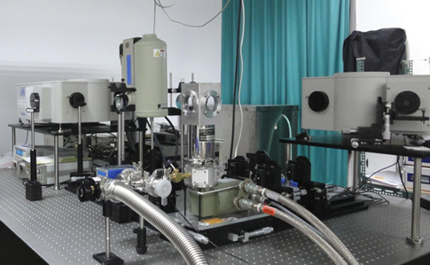

| 繁體中文 | English |
低溫陰極螢光系統 : 周武清教授負責的國科會貴重儀器低溫陰極螢光系統，包含掃描式電子顯微鏡(SEM)及光譜分析系統。本系統可以研究奈米半導體之光電特性 參考文獻:Nanotechnology 21, 465701 (2010)
電子槍：場發射型式 (加速電壓：0.5 to 30 kV) 解析力：1.5nm (15kV)、3.0nm ( 1 kV) 倍率：25-200,000倍 樣品最大容許範圍： 15mm直 徑×10mm高
上面的照片是低溫陰極螢光系統，包含右側的JEOL 7001掃描式電子顯微鏡(SEM)及兩部光譜分析系統分別量測紅外到可見光波段與可見光到紫外光波段。
光激螢光譜量測： 周武清教授的光譜分析系統涵蓋紅外光(波長2μm)到紫外光(波長300nm)。除了可以利用氦鎘雷射與氬離子雷射激發，進行光激螢光譜量測之外。也可以進行拉曼散射、光反射與光穿透等光譜實驗。另外，也運用脈衝式二極體雷射激發時間解析光激螢光譜，研究電子與電洞複合的動態。 
NT - MDT P47 Scanning Probe Microscopy
其他量測設備 光激螢光光譜系統、時間解析光譜系統、Micro-Raman System、高壓拉曼系統 |